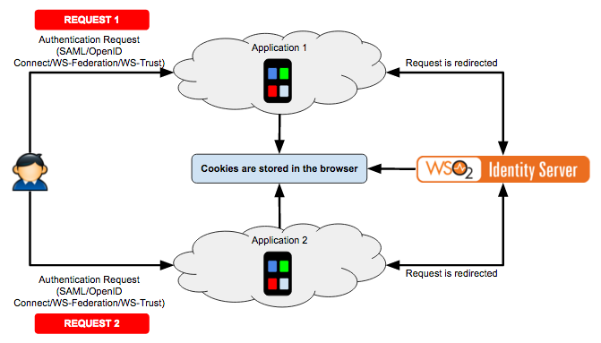
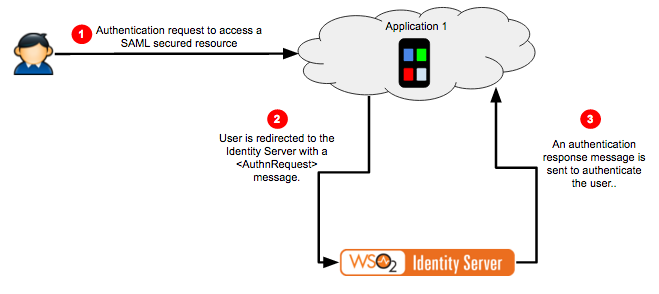

Single Sign-On and Identity Federation¶
Introducing single sign-on¶
Single sign-on (SSO) is one of the key features of the WSO2 Identity Server that enables users to provide their credentials once and obtain access to multiple applications. The users are not prompted for their credentials when accessing each application until their session is terminated. Additionally, the user can access all these applications without having to log into each and every one of them individually. So, if users log into application A, for example, they would automatically have access to application B as well for the duration of that session without having to re-enter their credentials.
The following are some of the advantages you can have with SSO:
- Users need only a single username/password pair to access multiple services. Thus they do not have the issue of remembering multiple username/password pairs.
- Users are authenticated only once at the identity provider and then they are automatically logged into all services within that "trust-domain". This process is more convenient to users since they do not have to provide their username/password at every service provider.
- Service providers do not have the overhead of managing user identities, which is more convenient for them.
- User identities are managed at a central point. This is more secure, less complex and easily manageable.
How single sign-on works¶
To understand how single sign-on works, it is useful to first examine how authentication works in a non SSO environment. The following diagram depicts this flow.

Figure : Authentication in a non SSO environment
In the above figure, the users access Application 1 first and then Application 2 using the same browser. The user is authenticated in Application 1 first and can access this application. When the users attempt to access Application 2 , they must enter their credentials again and get access to Application 2 separately. There is no way for Application 2 to access the cookie stored in the browser for Application 1 and authenticate the user by that means.
The following diagram depicts how this story differs in a SSO environment.

Figure : Authentication in a SSO environment
In this second figure, the users access Application 1 first followed by Application 2 . Once again, the users use the same browser to access these applications. The users are redirected to the WSO2 Identity Server (or any authentication server that is configured for this task). If the users are already logged in to the Identity Server, the user is authenticated in Application 1 via an authentication token sent by the Identity Server to Application 1 . When Application 2 is accessed, the same thing happens and the users are redirected to the Identity Server and authenticated. This is how SSO works.
SSO in reality¶
Single sign-on is widely used in web technologies. Google is one of the best examples. Try this simple exercise.
- Visit www.google.com from your web browser.
- Click the SIGN IN button on the top right of the page.
- Once you sign in, you are redirected to https://accounts.google.com/ServiceLogin . There you are requested to enter your Username and Password. Enter your Google credentials there.
- Once you enter your Username and Password, you are directed back to www.google.com where you started.
- Next visit www.gmail.com , the Google mail server.
- Notice that you are automatically signed in and you directly access your Gmail Inbox. You did not have to enter your Username and Password at Gmail.
- In addition to that; now try www.youtube.com .
-
You are automatically signed in. You do not have to enter your username and password at YouTube.
Tip
Tip : Notice the URL of the web browser. Each time you access an application, you see that you are being redirected to https://accounts.google.com/ServiceLogin and return immediately back to the website.
Single Sign-On (SSO) allows you to sign in only once but provides access to multiple resources without having to re-enter your username and password.
Supported protocols for SSO¶
The following are the supported protocols for agent-based single sign-on.
- SAML 2.0
- WS-Federation
- OpenID Connect
- WS-Trust
The following sections in this topic expand on these protocols and provide details pertaining to them.
SAML 2.0 SSO¶
SAML stands for Security Assertion Markup Language, which is an XML-based data format for exchanging authentication and authorization data between an identity provider and a service provider. The single most important requirement that SAML addresses is web browser single sign-on (SSO). Three main roles are defined in SAML Specification.
- The Principal : This is typically the user who requires a service from a service provider entity.
- The Identity Provider : The SAML authority that provides the identity assertion to authenticate a principal.
- The Service Provider : The SAML consumer that provides the service for principals.
The main use case scenario covered by SAML is the principal (the user) requesting access to a resource or service from the service provider. Then the service provider, using SAML, communicates with the identity provider to obtain identity assertion. The service provider makes the access control decision, depending on this assertion.
SAML 2.0 is the latest version of SAML, which uses security tokens containing assertions to pass information about a user between an identity provider and a service provider.
SAML 2.0 provides five main specifications:
- Core
- Bindings
- Profiles
- Metadata
- Conformances
SAML 2.0 web browser-based SSO profile¶
SAML 2.0 Web Browser based SSO profile is defined under the SAML 2.0 Profiles specification.
In a web browser based SSO system, the flow can be started by the user either by attempting to access a service at the service provider or by directly accessing the identity provider itself.
If the user accesses a service at a service provider:
- The service provider determines which identity provider to use (this is the case when there are multiple identity providers. SAML identity provider discovery profile may be used).
- The service provider generates a SAML message and then redirects the web browser to the identity provider along with the message.
- Identity provider authenticates the user.
- The identity provider generates a SAML message and then redirects the web browser back to the service provider.
- The service provider processes the SAML message and decides to grant or deny access to the user.
If the user accesses the identity provider directly, then only the steps 3, 4 and 5 are in the flow.
The following diagram depicts this flow.

Figure : SAML 2.0 authentication flow
The message MUST contain an element that uniquely identifies the service provider who created the message. Optionally, the message may contain elements such as Issuer, NameIDPolicy, etc. More information regarding the message can be found in SAML Core Specification .
Click here for more information on assertion consumers, the authentication request and response
SAML 2.0 SSO assertion consumers
Service providers act as SAML assertion consumers. They have two basic functions:
- Create messages and redirect users to the identity provider with the
created message.
- Process messages from the identity provider and make decisions based on them.
The following code is a sketch of a sample service provider servlet in a SAML 2.0 web browser-based SSO system.
java
public class Resource extends HttpServlet
{
private static SamlConsumer consumer = new SamlConsumer();
public void doGet(HttpServletRequest request, HttpServletResponse response)
{
requestMessage = consumer.buildRequestMessage();
response.sendRedirect(requestMessage);
}
public void doPost(HttpServletRequest request, HttpServletResponse response)
{
responseMessage = request.getParameter("SAMLResponse").toString();
result = consumer.processResponseMessage(responseMessage);
}
}
When a web user attempts to access the above servlet, its
doGet() method is called. Inside the
doGet() method, it generates an message and
then redirects the user to the identity provider.
After authentication is completed by the identity provider, it does a
POST callback to the above servlet with a
message. Then the doPost() method of the
servlet gets called and inside the doPost()
method, it retrieves the message from the request and then the message
is passed to the SamlConsumer instance for
processing.
** <AuthnRequest> message**
To create an <AuthnRequest> message using the
OpenSAML library, do the following.
- Add the OpenSAML library to the build path of the project. You can download the OpenSAML .jar file from here .
- A sample
<AuthnRequest>message can be found here . -
According to SAML 2.0 specifications, the message must contain an element. Create the
Issuerelement first.java String issuerId = "saml2.sso.demo"; IssuerBuilder issuerBuilder = new IssuerBuilder(); Issuer issuer = issuerBuilder.buildObject("urn:oasis:names:tc:SAML: 2.0:assertion", "Issuer", "samlp"); issuer.setValue(issuerId); -
Create the
<AuthnRequest>next.java // the issuerUrl is the url of the service provider who generates the message String issuerUrl = "http://localhost:8080/saml2.sso.demo/consumer"; DateTime issueInstant = new DateTime(); AuthnRequestBuilder authnRequestBuilder = new AuthnRequestBuilder(); AuthnRequest authnRequest = authnRequestBuilder.buildObject("urn:oasis:names:tc:SAML:2.0:protocol", "AuthnRequest", "samlp"); authnRequest.setForceAuthn(false); authnRequest.setIsPassive(false); authnRequest.setIssueInstant(issueInstant); authnRequest.setProtocolBinding("urn:oasis:names:tc:SAML: 2.0:bindings:HTTP-POST"); authnRequest.setAssertionConsumerServiceURL(issuerUrl); authnRequest.setIssuer(issuer); authnRequest.setID(aRandomId); authnRequest.setVersion(SAMLVersion.VERSION_20);The message may contain many other elements like "," etc. those elements can be created and added to the message in the same way.
-
Next encode the message.
``` java Marshaller marshaller = Configuration.getMarshallerFactory().getMarshaller(authnRequest); Element authDOM = marshaller.marshall(authnRequest);
StringWriter rspWrt = new StringWriter(); XMLHelper.writeNode(authDOM, rspWrt); String requestMessage = rspWrt.toString(); Deflater deflater = new Deflater(Deflater.DEFLATED, true); ByteArrayOutputStream byteArrayOutputStream = new ByteArrayOutputStream(); DeflaterOutputStream deflaterOutputStream = new DeflaterOutputStream(byteArrayOutputStream, deflater); deflaterOutputStream.write(requestMessage.getBytes()); deflaterOutputStream.close();/* Encoding the compressed message */ String encodedRequestMessage = Base64.encodeBytes(byteArrayOutputStream.toByteArray(), Base64.DONT_BREAK_LINES); String encodedAuthnRequest = URLEncoder.encode(encodedRequestMessage,"UTF-8").trim(); ```
-
Construct the redirection URL.
java redirectionUrl = identitypProviderUrl+ "?SAMLRequest=" + encodedRequestMessage; -
Redirect the user to the identity provider.
java response.sendRedirect(redirectionUrl);
** <Response> message**
The Identity provider must use HTTP POST or artifact binding to transfer
the <SAMLResponse> message to the service
provider. To read the <Response> message
issued by the WSO2 Identity Server, do the following:
- A sample <
Response> message can be found here . -
The response message must be fetched from the request.
java responseMessage = request.getParameter("SAMLResponse").toString(); -
The fetched
responseMessageis unmarshaled and the SAML message is retrieved.java DocumentBuilderFactory documentBuilderFactory = DocumentBuilderFactory.newInstance(); documentBuilderFactory.setNamespaceAware(true); DocumentBuilder docBuilder = documentBuilderFactory.newDocumentBuilder(); byte[] base64DecodedResponse = Base64.decode(responseMessage); ByteArrayInputStream is = new ByteArrayInputStream(base64DecodedResponse); Document document = docBuilder.parse(is); Element element = document.getDocumentElement(); UnmarshallerFactory unmarshallerFactory = Configuration.getUnmarshallerFactory(); Unmarshaller unmarshaller = unmarshallerFactory.getUnmarshaller(element); Response response = (Response) unmarshaller.unmarshall(element); -
The retrieved SAML 2.0 response message can be easily processed. For example, let's take the username or the subject's
NameID.java String subject = response.getAssertions().get(0).getSubject() .getNameID().getValue(); -
Alternatively, if the response is signed by the identity provider, you can retrieve the certificate.
java String certificate = response.getSignature().getKeyInfo().getX509Datas().get(0).getX509Certificates().get(0).getValue();
Identity provider initiated SSO¶
To initiate IdP Initiated SSO you need to perform a HTTP GET/POST to the following URL (assume the registered service provider issuer ID is foo.com ). The SAML protocol message can be encoded using Base64 encoding.
https://localhost:9443/samlsso?spEntityID=foo.com
This request will authenticate and redirect the user to the registered
Assertion Consumer URL. Optionally, you can send in a
RelayState parameter as follows:
The RelayState parameter must be URL encoded. This
request will authenticate and redirect the user to the URL in the
RelayState parameter itself.
Either you could have service provider initiated SSO only, or service provider initiated SSO and identity provider initiated SSO. You cannot have only identity provider initiated SSO. By design, service provider initiated SSO is more restrictive and secure. If a service provider is allowed to do identity provider initiated SSO, it would automatically imply that this service provider is allowed to do service provider initiated SSO as well.
Recommended reading
See SAML 2.0 specification documentation for more information.
WS-Federation¶
WS-Federation (Web Services Federation) describes the management and brokering of trust relationships and security token exchange across Web services and organizational boundaries. WS-Federation is a part of the larger WS-Security framework. For example, WS-Federation builds on the Security Token Service (STS) by providing mechanisms that facilitate interactions. In the WS-Federation Model, an Identity Provider is a Security Token Service (STS).
Recommended reading
See WS-Federation specification documentation for more information.
OpenID Connect¶
OpenID Connect is a simple identity layer on top of the OAuth 2.0 protocol. It allows Clients to verify the identity of the End-User based on the authentication performed by an Authorization Server, as well as to obtain basic profile information about the End-User in an interoperable and REST-like manner.
OpenID Connect allows clients of all types, including Web-based, mobile, and JavaScript clients, to request and receive information about authenticated sessions and end-users. The specification suite is extensible, allowing participants to use optional features such as encryption of identity data, discovery of OpenID Providers, and session management, when it makes sense for them.
Recommended reading
See OpenID Connect specification documentation for more information.
WS-Trust¶
The "Security Token Service" (STS) component of WSO2 Identity Server enables you to configure the generic STS to issue claim-based security tokens. A claim-based security token is a common way for applications to acquire and authenticate the identity information they need about users inside their organization, in other organizations, and on the Internet. This Security Token Service is capable of issuing SAML 1.1 and SAML 2.0 tokens as recommended in WS-Trust and SAML Web Service Token Profile specifications.
The WSDL of this service can be accessed by clicking this URL:
https://(hostname):(port)/services/wso2carbon-sts?wsdl
. For instance, with the default configuration, the URL is
https://localhost:9443/services/wso2carbon-sts?wsdl
.
Both SAML 1.1 and SAML 2.0 token types are supported by default. The issued token type is decided based on the type of token defined in the RST (Request Security Token). Currently, the Bearer Subject Confirmation and Holder-Of-Key subject confirmation methods are both supported. With Holder-Of-Key, both Symmetric and Asymmetric key types are supported. You can obtain tokens containing claims that hold certain information about the subject. These claims can be extracted from the profiles or through custom claim callbacks which can be registered to the Carbon runtime.
Related Topics
- See WS-Trust specification documentation for more information.
- See Configuring WS-Trust Security Token Service to configure WS-Trust in WSO2 Identity Server.
Identity federation and a comparison with SSO¶
Identity and access management requirements are rapidly evolving over the years. Organizations cannot survive with authentication and authorization mechanisms that only span a single boundary of trust. Hence, these organizations often provide and consume services across trust boundaries, which may include partners, subsidiaries, customers or suppliers and may span across multiple buildings, cities, states, countries and even continents. Identity federation and Single Sign On (SSO) come into the picture to provide and consume these services across trust boundaries.
Identity federation and SSO have similarities as well as key differences. Identity federation enables users to access multiple applications using the same access credentials. This makes access easy, as users do not have to remember a different set of credentials for every application they use. However, the users have to provide their credentials to each one of the applications separately although the credentials used are the same. On the other hand, SSO enables users to provide their credentials once and obtain access to multiple applications. In SSO, the users are not prompted for their credentials when accessing each application until their session is terminated.